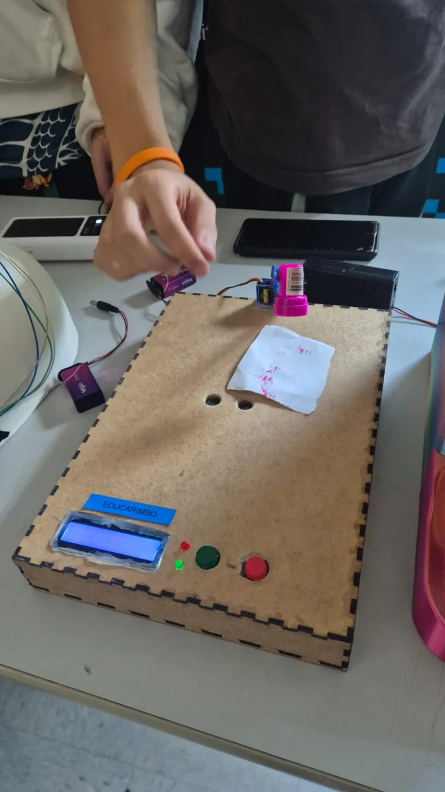

Arduino
Plataforma de prototipagem utilizada em atividades e estudos.
Conhecimentos em automação, programação e eletrônica aplicados a um projeto acadêmico em equipe.
Projeto apresentado na formação técnica, com integração de hardware, sensores, captura de imagens e informações digitais.
O projeto teve como objetivo automatizar a identificação e o registro de componentes eletrônicos. Uma esteira utiliza ESP32, ESP32-CAM e sensores para apoiar a captura de imagens e a organização das informações em base de dados.
Plataforma de prototipagem utilizada em atividades e estudos.
Microcontroladores para controle, conectividade e captura de imagens.
Componentes para coleta de sinais e construção de sistemas físicos.
Além da esteira inteligente, o portfólio reúne outros projetos acadêmicos com foco em acessibilidade, automação e eletrônica aplicada.

Projeto com sensor ultrassônico para auxiliar pessoas com deficiência visual. Os LEDs indicam a proximidade de obstáculos e o buzzer altera o som conforme a distância detectada.

Estrutura em MDF desenvolvida para automatizar o carimbo de nota em atividades escolares, com interface física, display e acionamento eletrônico.
Adicionar imagens do equipamento real e da montagem completa.
Inserir demonstração autorizada do projeto em operação.
Inserir relatório, código e apresentação, quando disponíveis.